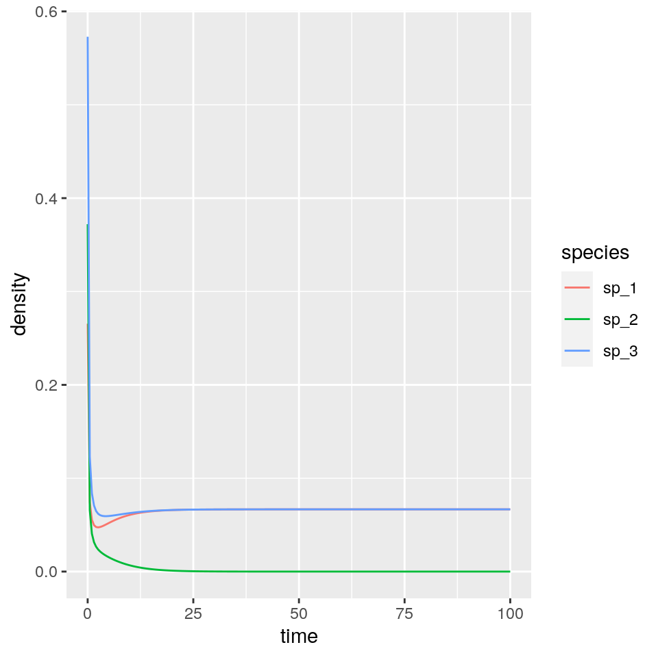
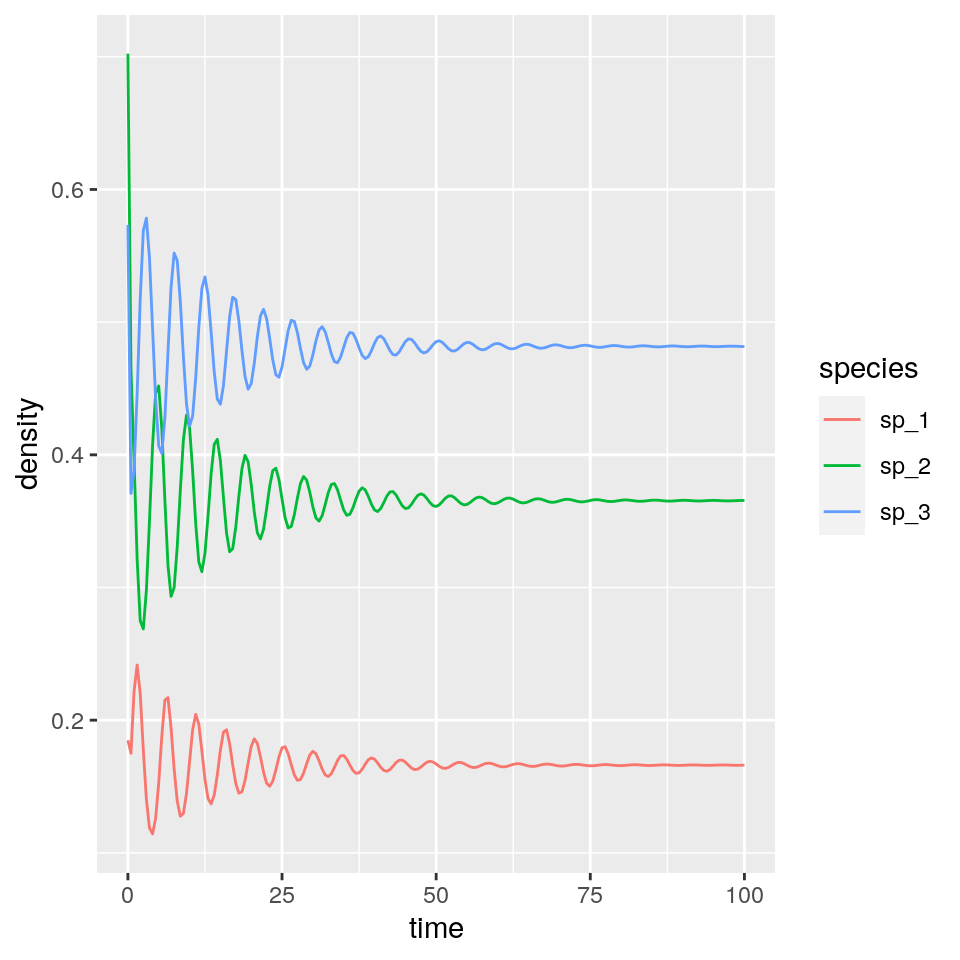
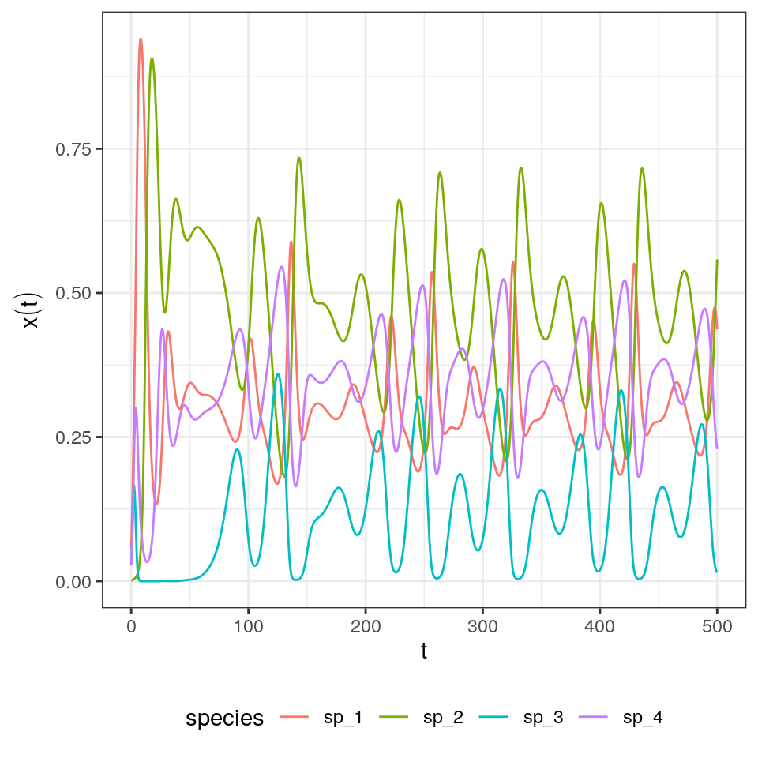

Lecture 3 Generalized Lotka-Volterra model
We can write the Generalized Lotka-Volterra model in a compact form as:
\[ \dfrac{dx(t)}{dt} = D(x(t))(r + A x(t)) = X(r + Ax) \]
where \(x(t)\) is a (column) vector of length \(n\) containing the densities of all populations \(1, \ldots, n\) at time \(t\), \(r\) is a vector of “intrinsic growth rates” (or death rates, when negative), measuring the growth (decline) of population \(i\) when grown alone at low density, and \(A\) is a \(n \times n\) matrix of interaction coefficients. We use \(D(x)\) to denote the diagonal matrix with \(x\) on the diagonal.
3.1 A single population
The simplest case to study is that of a single population, in which case the equation becomes that of the logistic growth:
\[ \dfrac{dx(t)}{dt} = x(t)(\rho + \alpha x(t)) \]
As we’ve seen before, this is a separable ODE, with solution:
\[ x(t) = \frac{\rho\, {x_0}\, e^{\rho t}}{\rho- \alpha\, {x_0} \left(e^{\rho t}-1\right)} \]
3.1.1 Metapopulation dynamics
Consider a fragmented landscape in which habitable patches are connected by dispersal (for simplicity, suppose that all patches are reachable from any other). Call \(p(t)\) the proportion of patches occupied by the species of interest at time \(t\), and assume that a) an empty patch (the proportion of empty patches is \(1 - p(t)\)) is colonized by the species with rate \(\gamma\, p(t)\), where \(\gamma\) is the “colonization rate”, and b) that occupied patches become empty at rate \(\epsilon\, p(t)\) (“extinction rate”). We want to model the proportion of patches occupied by the population at time \(t\) (Levins 1969):
\[ \dfrac{d p(t)}{dt} = \gamma\, p(t)(1 - p(t)) - \epsilon\, p(t) = p(t) ((\gamma - \epsilon) - \gamma\, p(t)) \]
which is equivalent to the logistic equation above with \(\rho = \gamma -\epsilon\) and \(\alpha = -\gamma\). As such, asymptotically the proportion of patches occupied by the population will be \(-\rho/\alpha = (\gamma -\epsilon) / \gamma\).
3.1.2 S-I-S model
Consider a population of individuals, each of which can be in one of two states: susceptible to a disease, or infective/infected. Call \(S(t)\) the proportion of susceptible individuals at time \(t\), and \(I(t)\) the proportion of infected individuals, with \(S(t) + I(t) = 1\). When individuals meet, an infected individual can transmit the disease to susceptibles with rate \(\beta\); infected individuals recover from the disease with rate \(\gamma\), and return susceptible. We can write the system of equations:
\[ \begin{cases} \dfrac{d S(t)}{dt} = -\beta S(t) I(t) + \gamma I(t)\\ \dfrac{d I(t)}{dt} = \beta S(t) I(t) - \gamma I(t) \end{cases} \]
take the second equation, and substitute \(S(t) = 1 - I(t)\); rearranging:
\[ \dfrac{d I(t)}{dt} = \beta (1-I(t)) I(t) - \gamma I(t) = I(t)(\beta - \gamma -\beta I(t)) \]
which is again the equation for the logistic growth with \(\rho = \beta - \gamma\) and \(\alpha = -\beta\). As such, provided that \(\beta -\gamma > 0\), asymptotically a fraction \((\beta - \gamma) / \beta\) of individuals will be infected. The condition \(\beta -\gamma > 0 \to \beta > \gamma \to \beta/ \gamma > 1\) is often written as \(\mathcal R_0 = \beta/ \gamma > 1\).
3.2 Multi-species dynamics
3.2.1 Existence of an equilibrium
Returning to the multi-species system, and in analogy with the single species, we can look for stationary points (equilibria). If the matrix \(A\) is not singular, then we can look for a solution of \(r + Ax\) that has positive components (called a feasible equilibrium). If such point exists, it is unique and is the solution of \(Ax^\star = -r\), \(x^\star = -A^{-1}r\).
Suppose that the GLV has no feasible equilibrium. Then all trajectories (if bounded; some could grow to infinity) reach the boundary of \(\mathbb R^n_{0+}\). Practically, this means that to ensure coexistence of all species, it is necessary to have an equilibrium in the interior \(\mathbb R^n_{+}\).
For a proof, see Theorem 5.2.1 in Hofbauer and Sigmund (1998).
3.2.2 Stability of the coexistence equilibrium
Suppose that a feasible equilibrium \(x^\star\) exists. For the GLV model, the Jacobian is easy to compute:
\[ J_{ij} = \frac{\partial f_i}{\partial x_j} = A_{ij} x_i \]
and
\[ J_{ii} = \frac{\partial f_i}{\partial x_i} = r_i + \sum_j A_{ij} x_j + A_{ii} x_i \]
At equilibrium \(r_i + \sum_j A_{ij} x_j = 0\), and therefore:
\[ M = \left. {J} \right|_{ {x}^\star} = D(x^\star)A \]
If the eigenvalues of \(M\) have all negative real part, then \(x^\star\) is locally asymptotically stable.
D-stability and Lyapunov-Diagonal Stability
A matrix \(A\) is called stable if all its eigenvalues have negative real part. A matrix \(A\) is called D-stable if \(D(x) A\) is stable for every choice of \(x\) such \(x_i > 0\; \forall i\). While conditions for D-stability are not known for matrices of size greater than 3, a sufficient condtion for D-stability is that there exists a diagonal matrix \(D\) with positive elements on the diagonal such that \(DA + A^T D\) is negative definite (i.e., has negative eigenvalues).
Consequences for Lotka-Volterra dynamics
- If a matrix \(A\) is stable and symmetric, it is D-stable (just take \(D = I\)).
- Take a stable, non symmetric matrix \(A\) such that \(A + A^T\) is negative definite. Then any feasible equilibrium is stable: we have \(M = D(x^\star)A\), but if \(A\) is D-stable then \(M\) is stable.
3.2.3 Types of dynamics
As we’ve seen before, for a single population, there are only three types of dynamics that can be displayed by a GLV model: either the population grows to infinity, shrinks to zero, or asymptotically reaches a steady state.
Smale (1976) and Hirsch (1982) showed that limit cylces are possible for three or more species, and that any dynamics can be found for competitive GLV systems with five or more species.
A few examples taken from Barabás, J. Michalska-Smith, and Allesina (2016). First, a competitive system in which a feasible equilibrium does not exist, leading to the extinction of a species. For example, take
\[ r = \begin{pmatrix} 1\\ 1\\ 1 \end{pmatrix}\;\;A = -\begin{pmatrix} 10 & 9 & 5 \\ 9 & 10 & 9\\ 5 & 9 & 10 \end{pmatrix} \]
The coexistence equilibrium is not feasible:
\[ -A^{-1}r = \begin{pmatrix} -\dfrac{1}{12}\\ \dfrac{1}{4}\\ -\dfrac{1}{12}\\ \end{pmatrix} \]
and as such dynamics will lead to a boundary equilibrium:

Showing that species 2 goes extinct.
Then, a case in which the equilibrium exists, and is attractive (stable). Take:
\[ r = \begin{pmatrix} 10\\ 10\\ 10 \end{pmatrix}\;\;A = -\begin{pmatrix} 10 & 7 & 12 \\ 15 & 10 & 8\\ 7 & 11 & 10 \end{pmatrix} \]
Now the coexistence equilibrium is feasible:
\[ -A^{-1}r = \dfrac{1}{301}\begin{pmatrix} 50\\ 110\\ 145\\ \end{pmatrix} \]
and locally stable (the eigenvalues of \(D(x^\star) A)\) have negative real part). For a symmetric matrix, local stability implies global stability. Hence, starting from positive initial conditions for all species, we will eventually converge to the equilibrium:

With three competitors we can find stable limit cycles (this requires a feasible, unstable equilibrium):

And with four or more species we can have chaos (also here we need a feasible, unstable coexistence equilibrium):

3.2.4 The equilibrium is the time-average
Suppose that \(x(t)\) has a periodic orbit of period \(T\) (i.e., we assume \(x(0) = x(T)\)). Further, assume that the GLV has a feasible, interior equilibrium \(x^\star\). We want to calculate the average density for each species:
\[ \frac{1}{T} \int_0^T x(t) dt \]
First, we assume that \(x(t) > 0\) and write the dynamics of its logarithm:
\[ \dfrac{d \log(x_i(t))}{dt} = \dfrac{1}{x_i(t)}\dfrac{d x_i(t)}{dt} = r_i + \sum_j A_{ij} x_j(t) \]
In vector form:
\[ \dfrac{d \log x(t)}{d t} = r + A x(t) \]
Compute the average on both sides:
\[ \frac{1}{T}\int_0^T \frac{d \log(x(t))}{dt} dt= \frac{1}{T}\int_0^T \left(r + Ax \right) dt \]
yielding:
\[ \frac{1}{T}(\log(x(T)) - \log(x(0))) = 0 = r + A \left( \frac{1}{T} \int_0^T x(t) dt \right) \] Note that the l.h.s. is zero because \(x(0) = x(T)\). Multiplying by the matrix inverse and rearranging:
\[ -A^{-1} r = x^\star = \frac{1}{T} \int_0^T x(t) dt \]
showing that the average density is in fact the equilibrium. With a similar argument, one can prove that if the trajectory stays in a compact space (i.e., in case of chaotic attractors), then long-time average is still \(x^\star\).
3.2.5 Lyapunov diagonal stability and global stability
Suppose that there is a positive diagonal matrix \(C\) such that \(C A + A^T C\) is negative definite (i.e., has only negative eigenvalues; the eigenvalues are real because the matrix is symmetric). Then \(A\) is Lyapunov-diagonally stable. If this is the case, then \(A\) is stable, and any \(D A\) with \(D\) positive is also stable (called \(D-\)stability).
Further, suppose that the GLV system with parameters \(A\) and \(r\) has a feasible equilibrium point \(x^\star\). Then the function:
\[ V(x(t)) = 1^T C \left( x(t) -D(x^\star) \log x(t)\right) \]
is a Lyapunov function for the GLV system.
To prove this point, we start from \(r = -Ax^\star\). Substituting, we can write the GLV system as \(dx(t)/dt = D(x)A(x - x^\star)\); similarly, we can write \(d \log x(t)/dt = A(x - x^\star)\). Taking the derivative of \(V\) with respect to time:
\[ \begin{aligned} \frac{d V(x(t))}{dt} &= 1^T C \left(\frac{d x(t)}{dt} + D(x^*) \frac{d \log x(t)}{dt} \right)\\ &= 1^T C \left(A (x - x^\star) + D(x^*) A (x - x^\star) \right)\\ &= 1^T C \left(D(x - x^\star) A (x - x^\star) \right)\\ &= 1^T \left(D(x - x^\star) C A (x - x^\star) \right)\\ &= (x - x^\star)^T CA (x - x^\star)\\ &= \frac{1}{2}(x - x^\star)^T (CA + A^T C) (x - x^\star)\\ \end{aligned} \]
A matrix \(B\) is negative definite if \(y^T B y < 0\) for all \(y \neq 0\). As such \(\frac{d V(x(t))}{dt} \leq 0\), i.e., will decrease in time (starting from any \(x(0)\)) until the equilibrium \(x^\star\) is reached.
The results above show that if \(A\) is Lyapunov diagonally-stable and a feasible equilibrium \(x^\star\) exists, than all trajectories starting at a positive density will converge to the equilibrium. This property is often used to prove global stability.
EXERCISE ON TYPE OF DYNAMICS
3.3 MacArthur’s consumer-resource model
History: Robert H. MacArthur (1930-1972)
Robert MacArthur was born in Toronto, and moved to Vermont when his father (a geneticist) became a professor at Marlboro College.
He studied mathematics first at Marlboro College and then at Brown University. He enrolled as a PhD student in mathematics at Yale, but quickly switched to studying ecology with George Evelyn Hutchinson.
He was a professor first at the University of Pennsylvania and then at Princeton University. In his brief career (he died at age 45) he revolutionized ecology, by making it into a rigorous, predictive science based on general principles.
He is recognized for developing the Theory of Island Biogeography (with E. O. Wilson, MacArthur and Wilson (2001)), the investigation of limiting similarity (with R. Levins, MacArthur and Levins (1967)), the contributions to the complexity-stability debate (MacArthur (1955), see next lecture). The consumer-resource model he proposed in 1969 now bears his name (published also in MacArthur (1970) in a longer form—the first paper in the journal Theoretical Population Biology!).
Consumer-resource; separation of time-scales; turn into symmetric Lotka-Volterra; Lyapunov function
3.4 Further readings
On the theory of GLV:
Strogatz (2018) is a simple introduction to dynamical systems and bifurcation theory.
Hofbauer and Sigmund (1998) is a wonderful introduction to dynamical systems in ecology and population genetics, with a nice introduction to evolutionary game theory.
Hadeler, Mackey, and Stevens (2017) contains a more mathematically-oriented treatment of the material covered in the first part of this lecture.
Baigent (2016) is a mathematical introduction to Lotka-Volterra dynamics.
References
Baigent, Stephen A. 2016. “Lotka-Volterra Dynamics: An Introduction.” In. World Scientific.
Barabás, György, Matthew J. Michalska-Smith, and Stefano Allesina. 2016. “The Effect of Intra-and Interspecific Competition on Coexistence in Multispecies Communities.” The American Naturalist 188 (1): E1–E12.
Hadeler, Karl Peter, Michael C Mackey, and Angela Stevens. 2017. Topics in Mathematical Biology. Springer.
Hirsch, Morris W. 1982. “Systems of Differential Equations Which Are Competitive or Cooperative: I. Limit Sets.” SIAM Journal on Mathematical Analysis 13 (2): 167–79.
Hofbauer, Josef, and Karl Sigmund. 1998. Evolutionary Games and Population Dynamics. Cambridge University Press.
Levins, Richard. 1969. “Some Demographic and Genetic Consequences of Environmental Heterogeneity for Biological Control.” American Entomologist 15 (3): 237–40.
MacArthur, Robert. 1955. “Fluctuations of Animal Populations and a Measure of Community Stability.” Ecology 36 (3): 533–36.
MacArthur, Robert. 1970. “Species Packing and Competitive Equilibrium for Many Species.” Theoretical Population Biology 1 (1): 1–11.
MacArthur, Robert H, and Edward O Wilson. 2001. The Theory of Island Biogeography. Vol. 1. Princeton university press.
MacArthur, Robert, and Richard Levins. 1967. “The Limiting Similarity, Convergence, and Divergence of Coexisting Species.” The American Naturalist 101 (921): 377–85.
Smale, Steve. 1976. “On the Differential Equations of Species in Competition.” Journal of Mathematical Biology 3 (1): 5–7.
Strogatz, Steven H. 2018. Nonlinear Dynamics and Chaos: With Applications to Physics, Biology, Chemistry, and Engineering. CRC Press.